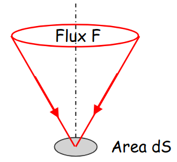
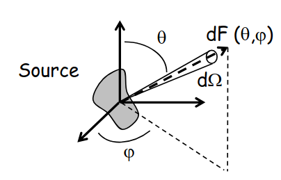
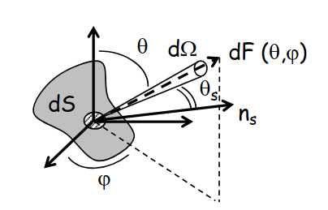
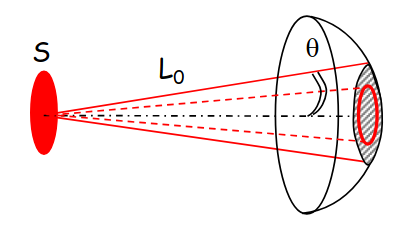
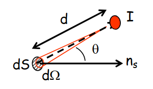
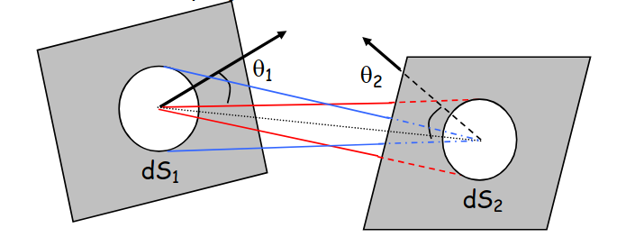
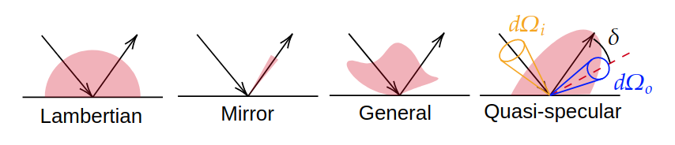

Photometric Quantities#
Irradiance (\(E\))#
The irradiance at a point on a surface is defined as the power of incoming light per unit area. It is measured in Watts per square meter (\(W/m^2\)). The irradiance is noted as \(E\) and is defined mathematically as:
where \(F(x, y)\) is the radiant flux (W) incident on the surface at point \((x, y)\), and \(S\) is the area of the surface.
The irradiance is called “illuminance” when considering visible light, and is measured in lumens per square meter (lux).
{kind=link}

Intensity of a Light Source (\(I\))#
The intensity of a light source is the flux per unit of solid angle in a given observation direction. It is measured in Watts per steradian (\(W/sr\)) or in lumens per steradian (candela) for visible light. The intensity is noted as \(I\) and is defined mathematically as:
where \(F(\theta, \phi)\) is the radiant flux (W) emitted by the light source in the direction defined by the angles \((\theta, \phi)\), and \(\Omega\) is the solid angle in steradians.
{kind=link}

Radiance (\(L\))#
Lets consider an elementary surface area \(dS\) of the source emitting an intensity \(dI(\theta, \phi)\) in the direction defined by the angles \((\theta, \phi)\). The radiance at point \((x, y)\) in the direction \((\theta, \phi)\) is defined as the flux per unit projected area and per unit solid angle. It is measured in Watts per steradian per square meter (\(W/sr/m^2\)) or in candelas per square meter for visible light. The radiance is noted as \(L\) and is defined mathematically as:
where \(\theta_S\) is the angle between the normal to the surface area \(dS\) and the direction \((\theta, \phi)\) of the emitted light, \(n\) is the refractive index of the medium surrounding the source, and \(G\) is the geometric extent.
{kind=link}

For a emitting inside a finite cone in air with uniform radiance \(L_0\), the radiance is given by:
where \(F_{tot}\) is the total flux emitted by the source, \(S\) is the area of the emitting surface, and \(\theta\) is the half-angle of the emission cone.
{kind=link}

A lambertian source is a surface that emits light uniformly in all directions. In this case, the radiance is constant and does not depend on the direction \((\theta, \phi)\).
Bouguer Law for Irradiance#
For a source of intensity \(I\) located at a distance \(d\) from a surface, the irradiance \(E\) on the surface is given by Bouguer’s law:
where \(\theta\) is the angle between the normal to the surface and the direction of the incoming light from the source.
{kind=link}

Geometric extent (\(G\))#
The geometric extent between two surfaces quantifies the ability of light to transfer from one surface to another. Is is a conserved quantity in an optical system without losses.
The geometric extent between two surfaces \(S_1\) and \(S_2\) is expressed in square meters per steradian (\(m^2/sr\)) and is noted as \(G\) :
where \(dS_1\) and \(dS_2\) are the areas of the two surfaces, \(\theta_1\) and \(\theta_2\) are the angles between the normals to the surfaces and the line connecting them, and \(d\) is the distance between the two surfaces.
{kind=link}

Bidirectional Reflectance Distribution Function (BRDF)#
For a given surface, the BRDF is defined as the ratio of the radiance in the direction \((\theta_o, \phi_o)\) to the irradiance from direction \((\theta_i, \phi_i)\). The BRDF is expressed in inverse steradians (\(sr^{-1}\)) and is noted as \(BRDF\).
where \(L_o\) is the outgoing radiance in Watts per steradian per square meter and \(E_i\) is the incoming irradiance in Watts per square meter.
{kind=link}

The amount of the incident flux emmitted in the Fresnel direction is called specular reflection, while the rest of the flux is called diffuse reflection or scattering reflection.
Optical system detection (Case of imaging system)#
An optical imaging system collects light from a surface and forms an image on a detector. The case of an imaging system is when the apparent size of tthe observed surface is much larger than the size of the detector’s pixel.
The amount of flux \(F_{det}\) collected by a pixel is given by:
where \(T_{op}\) is the optical transmission of the system, \(L_{obj}\) is the radiance of the observed surface, and \(G\) is the geometric extent between the observed surface and the detector pixel. As the geometrical extent is conserved in an optical system without losses, it can be calculated at any plane in the system.
For an in-axis optical system with a circular aperture of diameter \(D\), the flux collected by a pixel of area \(S_{pix}\) is given by:
where \(N\) is the aperture number of the system.
For an off-axis optical system, the irradiance collected by a pixel is, if the radiance is uniform in the object space :